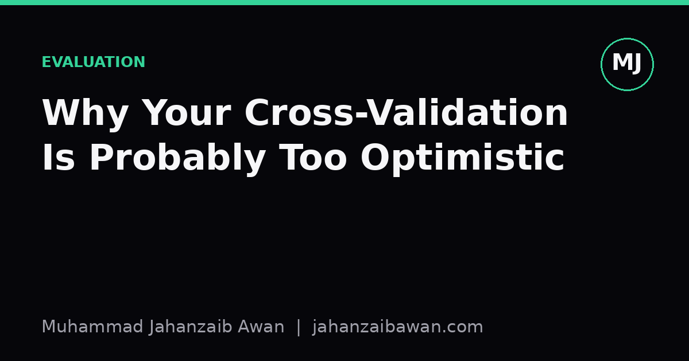
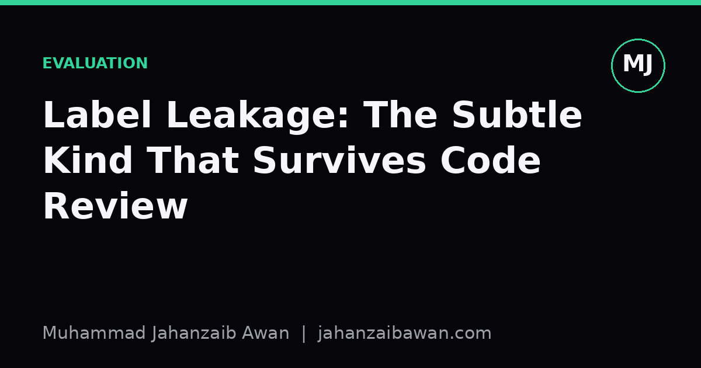
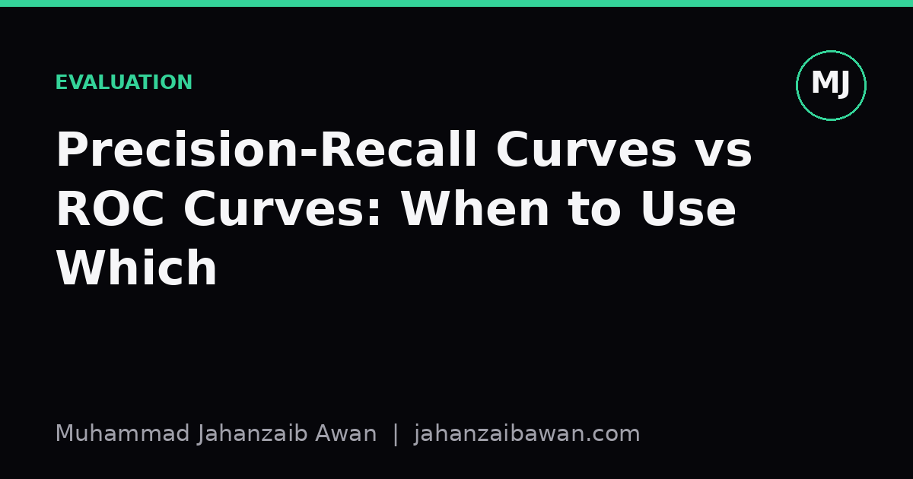
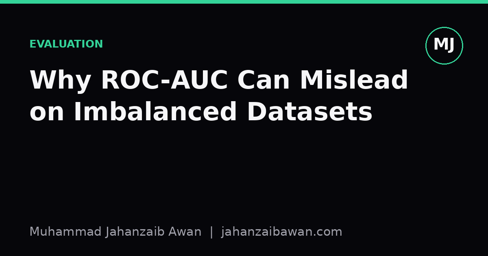

Notes on honest evaluation
Short write-ups on the part of machine learning that doesn't fit in a leaderboard: leakage, baselines, and why a good number is usually wrong until proven otherwise.

Why Your Cross-Validation Is Probably Too Optimistic
Your cross-validation score is likely inflated by leakage you have not noticed. Here is how it happens and how to fix it.
1 Jul 2026 Read →
Label Leakage: The Subtle Kind That Survives Code Review
Obvious leakage gets caught. The subtle kind hides in feature engineering, joins, and preprocessing, and it survives code review.
1 Jul 2026 Read →
Precision-Recall Curves vs ROC Curves: When to Use Which
ROC curves flatter you on imbalanced data. PR curves tell the truth. Here's the intuition, a worked example, and a rule of thumb you can actually use.
1 Jul 2026 Read →
Why ROC-AUC Can Mislead on Imbalanced Datasets
ROC-AUC stays deceptively high even when a model is nearly useless at catching rare positives. Here is the intuition, a worked example, and what to use instead.
1 Jul 2026 Read →The Bias-Variance Tradeoff, Explained on One Dataset
One small dataset, three model complexities, and a resampling experiment that makes the bias-variance tradeoff impossible to misunderstand.
1 Jul 2026 Read →
A tuned GRU beat LoRA-fine-tuned GPT-2, here's why
A 117M-parameter transformer lost to a small recurrent net on every metric. Not because transformers are bad, but because the baseline was done properly.
20 Jun 2026 Read →
How a naïve train/test split inflated my UAV F1 by 0.5
The same model, the same data, and a macro-F1 that fell from 0.78 to 0.26 the moment I split the data honestly. A walk through the most expensive bug in ML.
12 Jun 2026 Read →